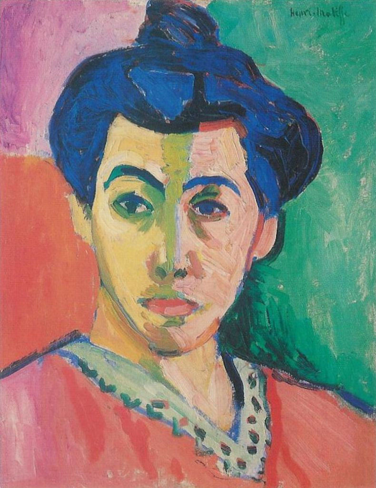
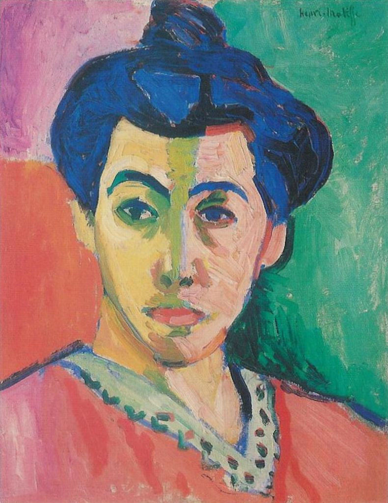

fue un pintor y grabador español.
Es considerado uno de los artistas europeos más importantes de su tiempo. Siempre innovador
fue un pintor y grabador español.
Es considerado uno de los artistas europeos más importantes de su tiempo. Siempre innovador , consiguió adelantarse a todos
y cada uno de los movimientos pictóricos que aparecieron en Europa, desde el romanticismo
, consiguió adelantarse a todos
y cada uno de los movimientos pictóricos que aparecieron en Europa, desde el romanticismo al surrealismo
al surrealismo , pasando por el
impresionismo
, pasando por el
impresionismo y el expresionismo.
Es por ello considerado el Padre del Arte Contemporáneo
y el expresionismo.
Es por ello considerado el Padre del Arte Contemporáneo .
.